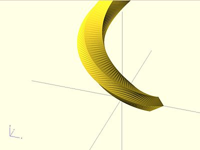
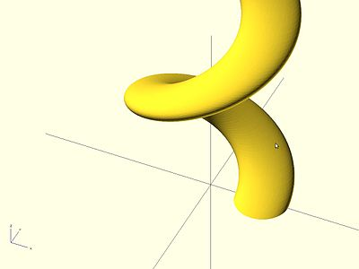

The slices parameter defines the number of intermediate points along the Z axis of the extrusion. Its default increases with the value of twist. Explicitly setting slices may improve the output refinement.

linear_extrude(height = 10, center = false, convexity = 10, twist = 360, slices = 100) translate([2, 0, 0]) circle(r = 1);
The special variables $fn, $fs and $fa can also be used to improve the output. If slices is not defined, its value is taken from the defined $fn value.

linear_extrude(height = 10, center = false, convexity = 10, twist = 360, $fn = 100) translate([2, 0, 0]) circle(r = 1);
Created with the Personal Edition of HelpNDoc: Full-featured EPub generator